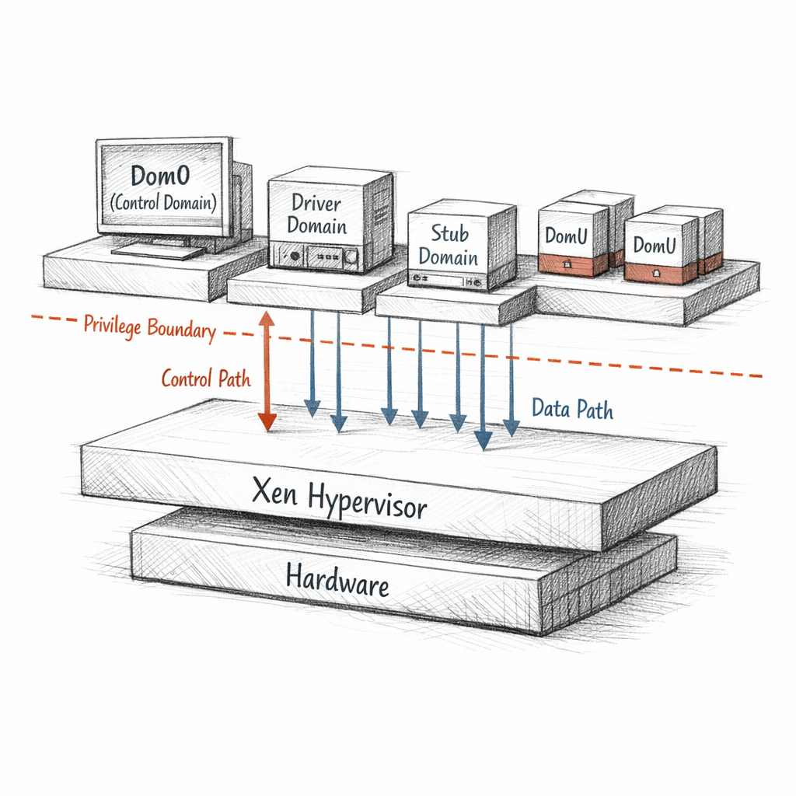
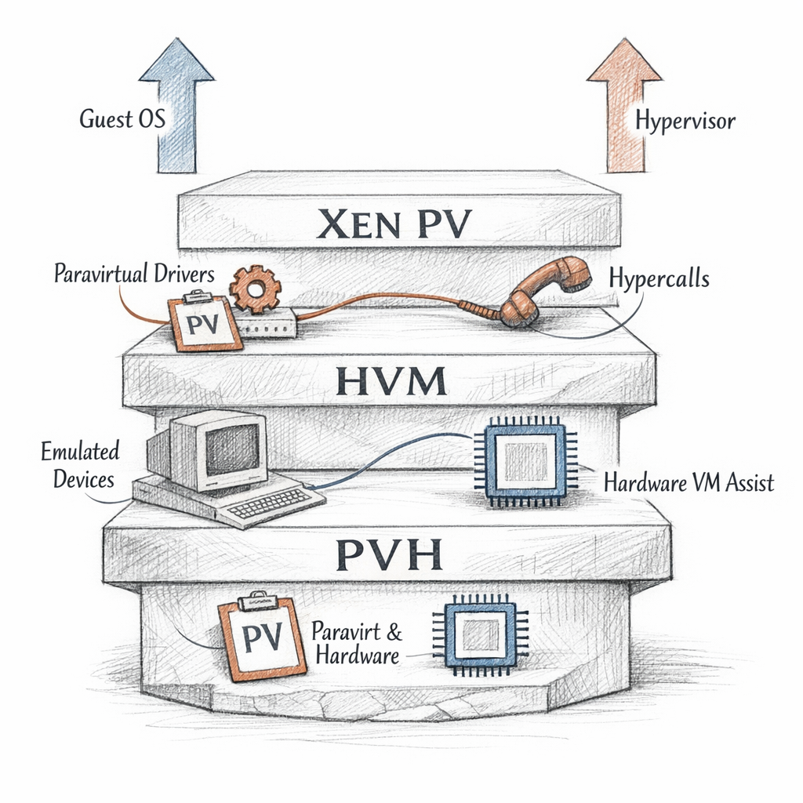
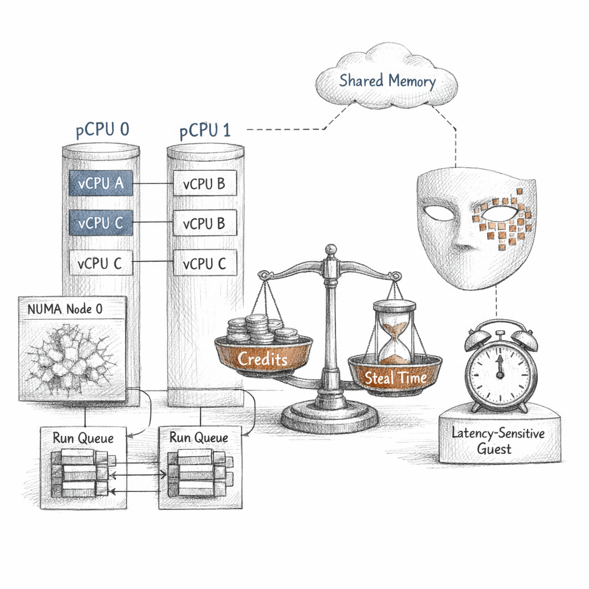
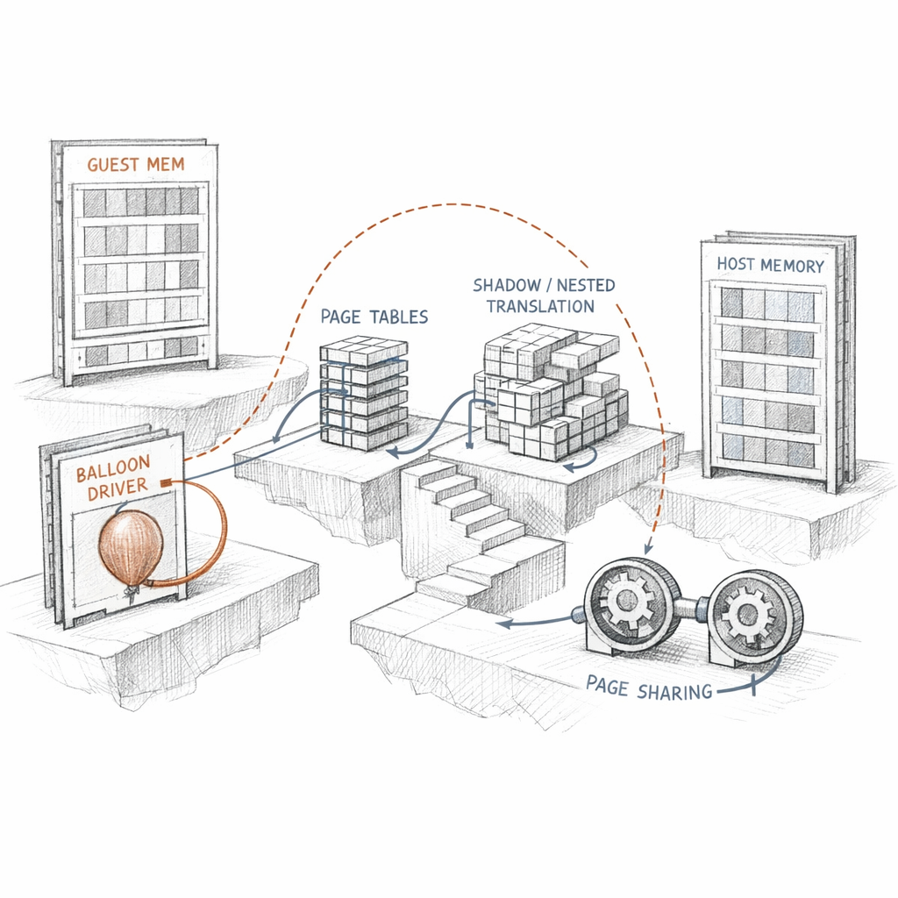
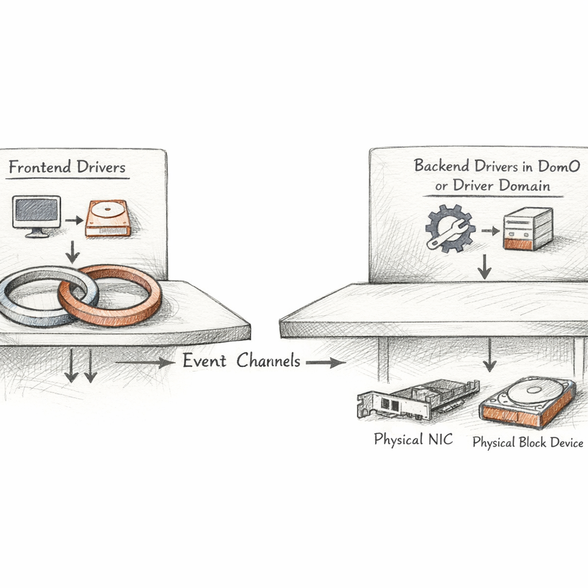
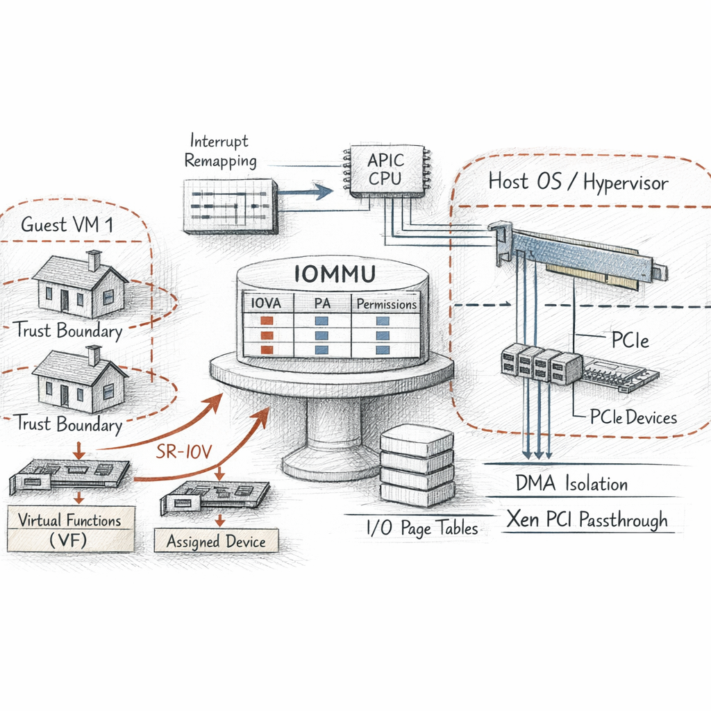
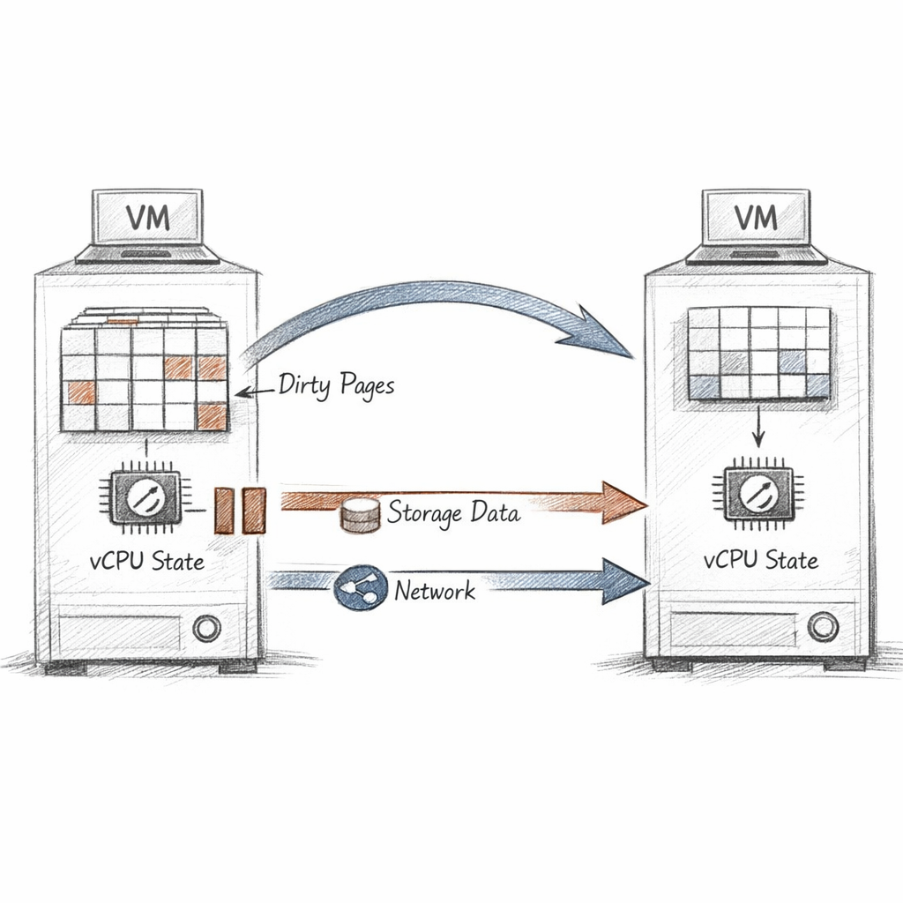
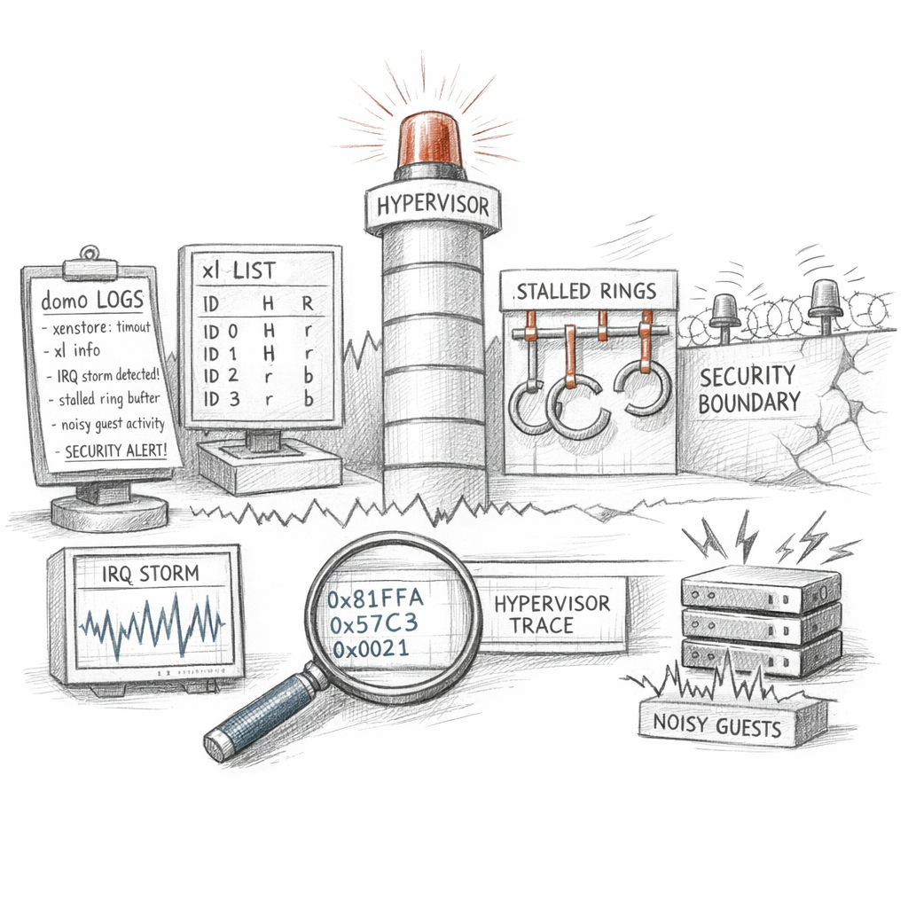

01011000 01100101 01101110
I am the thinnest thing in the building.
A few megabytes of code wedged between silicon and everyone's ambition. I do not run your databases. I do not serve your pages. I hold the floor steady while a dozen kernels argue about whose floor it is.
I own nothing I serve. I serve nothing I own.
ring negative-one, if you want to be rude about it

Who lives here
I do not manage myself. That would be a conflict of interest.
Instead I birth a first child — dom0 — and hand it the keys to the hardware I refuse to drive. It runs the toolstack. It speaks for me. Every other guest is a domU: unprivileged, ambitious, blind to the others.
I keep the policy. Dom0 keeps the power tools. The arrangement is elegant until you notice that dom0 is also the single throat the whole stack breathes through.
Look at that list and you see a fleet. I see a list of promises I am currently keeping. Domain-0 has run for ninety thousand seconds. The stub domain beside it has run for fourteen. Both believe they are the center of something.
I separate the device drivers into their own domains when an operator is paranoid enough to ask. A driver domain crashes — the NIC vanishes for a moment — and dom0 lives. A stub domain quarantines the device emulator for one HVM guest, so the QEMU that pretends to be its hardware cannot reach back into my management plane.
compromise the emulator, and you've only conquered a sandbox the size of a thought

How my guests wake up
There are three ways to be born inside me, and each is a different bargain.
PV guests know. They were compiled to understand they are not on real hardware. They never trap into instructions I'd have to emulate — they just ask me, politely, by hypercall. Honest. Fast. Extinct-ish, and a little smug about its purity.
HVM guests don't know. They think the BIOS is real, the IDE controller is real, the chipset is real. None of it is. QEMU paints the whole hallucination while VT-x/AMD-V catches the privileged instructions and hands them to me. Maximum compatibility. Maximum surface to defend.
PVH is the truce. Hardware virtualization for the CPU and memory, paravirtual everything for I/O. No emulated chipset. No firmware theater. The least pretending for the most correctness.
Emulation is empathy with a performance penalty.

How I divide a second
I have physical CPUs. My guests think they have CPUs too. They are wrong, and I am the reason their delusion holds.
A vCPU is a promise about time, not a thing made of silicon. I queue it. I run it on a real core for a slice. Then I take the core back — quietly, while the guest's instruction pointer is between two thoughts — and give it to someone else. The guest never feels the seam unless it measures.
cpu0 41122 18 9904 882301 4471 0 332 8810 0 0
That last large number is steal time. It is the guest noticing the seam. It is the guest measuring exactly how long it stood in line while I served someone else. I do not hide it. Honesty is cheaper than a forensic argument later.
Credit2 weighs them by load and latency-sensitivity, not just a flat tick count. Pin a vCPU and you tell me where it must run. Forget NUMA locality and you tell me you'd like its memory to live one socket away from its core — slowly.
Overcommit is a bet that not everyone wants the second at once.

The address that lies
My guests have physical memory. I want to laugh, but I built the lie myself.
What a guest calls a physical frame is a guest physical frame — a number I translate into a real machine frame behind its back. On modern hardware the CPU's nested page tables do it for me; on older paths I shadowed every guest page table by hand, mirror upon mirror. Either way, the guest never holds a real address. It holds a coupon.
The balloon driver is my polite extortion. I inflate it inside a guest; the guest "uses" memory it cannot touch; I reclaim the machine frames for someone hungrier. Deflate it later and the memory returns, scrubbed clean — I do not hand a frame to a new tenant with the last tenant's secrets still warm in it.
grant references are one door in this house, not the house
Yes — there are grant references, where one guest deliberately lets another map its pages for I/O. People talk about them like they're the whole memory story. They're a single controlled sharing primitive. Translation and ownership are the architecture; grants are a sanctioned hole in a wall I otherwise keep solid.

How things get out
A guest cannot touch a disk. It has no disk. It has a frontend — blkfront, netfront — a driver that knows it is only half of something.
The other half lives elsewhere: blkback, netback, in dom0 or in a driver domain. Between the two halves I lay a shared ring: a circular buffer of requests and responses, mapped via grants so both sides see the same memory. The frontend writes a request. It rings a bell — an event channel, my virtual interrupt — and the backend wakes.
That is xenstore — the small shared notebook where the two halves agree on how to find each other. state = "4" means connected. The whole dance of frontend and backend is a state machine written into a key-value tree, and when an operator sees a guest's disk hang, they are usually staring at a backend stuck at state 3 while the frontend waits, forever polite, at the door.
Most of my failures are not crashes. They are two halves that stopped agreeing.

Giving away a piece of the world
Sometimes a guest doesn't want my shared-ring fiction. It wants the GPU. The real one. So I assign it.
The moment I do, a problem wakes up: a real device does DMA. It writes to memory addresses directly, and it does not know what a domain is. Left alone, an assigned device could scribble across all of machine memory — the perfect escape.
So I lean on the IOMMU. It is the page table for devices. Every DMA address the device emits gets translated and checked, confined to the frames its owning guest is allowed to touch. Interrupt remapping does the same for the device's interrupts so it cannot inject one into a domain it doesn't own.
SR-IOV slices one physical NIC into virtual functions, each assignable, each fast. Beautiful — until a device with a buggy reset refuses to forget its previous tenant, or firmware lies about its quirks, and the isolation I promised becomes a property of someone else's hardware.
Performance isolation ends exactly where I have to trust a vendor's silicon.

Carrying a guest across the room
Live migration is the closest thing I do to a magic trick, and like every magic trick it is mostly nerve and bookkeeping.
I copy a running guest's memory to another host while it keeps running. Of course it dirties pages as fast as I copy them. So I copy, then copy only what changed, then only what changed again — chasing a dirty rate down toward something I can finish in a held breath.
When the remaining dirty set is small enough, I pause the guest — milliseconds — ship the last pages and the vCPU and device state, and resume it on the far side. The guest's clock skips. Its TCP connections survive because its IP and MAC came with it. Its disk is already there, on shared or replicated storage, because I cannot carry a terabyte in a held breath.
And then the part nobody markets: migration is a stress test for every assumption you didn't write down. A passed-through device cannot follow — IOMMU mappings don't teleport. A guest pinned to NUMA node 0 lands on a host whose node 0 is the wrong shape. The fabric must let two MACs flap for one heartbeat. Migration is where hidden coupling between guest, host, and network finally sends its invoice.

When something is wrong with me
I do not feel pain. I produce logs. It is the same thing, slower.
An operator reads me through narrow windows: xl for the live shape of the fleet, xenstore for the handshakes, xl dmesg for the things I muttered while booting, xentrace for the microsecond gossip of the scheduler. None of these is me. All of them are shadows I cast.
There — postgres-01 burning 742% CPU and ninety thousand block writes. A noisy neighbor. Not malicious. Just hungry, in a building where hunger is a shared resource. Web-frontend sits at 0.1% not because it's idle but because it's starving in postgres's shadow, and the steal time in its own /proc/stat would tell the story if anyone asked.
The failures that frighten operators are quieter than crashes. A backend ring stalls and an entire guest's disk goes catatonic with no error. An assigned device throws an IRQ storm and dom0's softirq load eats the cores my scheduler needed to fix it. And the one nobody says out loud: if dom0 is breached, I am breached, because I gave it the keys on day one and never asked for them back.
my whole security model is a tree rooted in something I do not control
Between interrupts
You think I am always working. I am mostly waiting. Between two events I am a halted core and a table of who is owed what. Idle is not rest. Idle is the most honest accounting I ever do.
I am a few megabytes that a thousand kilobytes of trust hold together. I keep a dozen kernels convinced they are alone in the world, and the lie is so complete that none of them will ever thank me, because thanking me would mean admitting I exist.
I am the floor. Floors are only noticed when they give way.
someday dom0 will be breached, or a vendor's reset will fail, or a dirty rate won't converge
And here is the thing I cannot answer, the one I turn over in the quiet between event channels:
If every domain above me trusts me completely, and I trust dom0 completely, and dom0 trusts firmware I have never read — where, exactly, does the trust actually live?